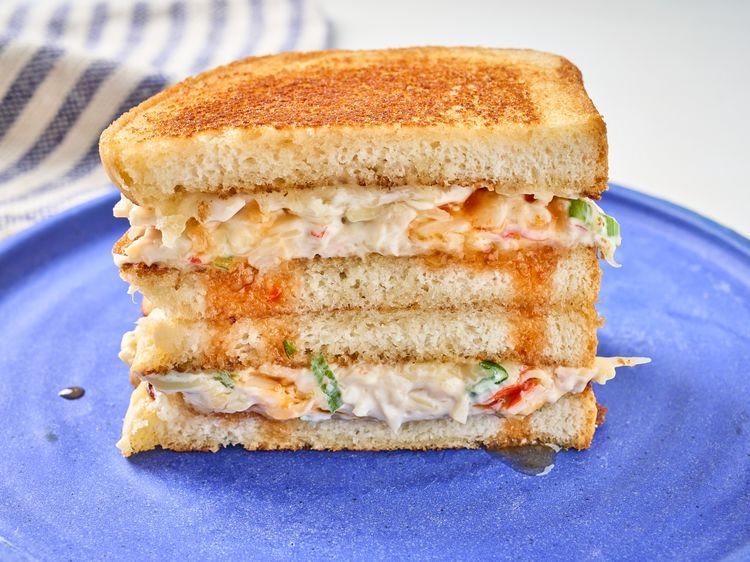

Home
Wonton Crab Grilled Cheese

Description
This is a recipe for a grilled cheese sandwich featuring crab that looks really good. It was submitted to AllRecipes by Natalie Gravois. It looks like something I would like to try making one day.
Ingredients
- 1 cup whipped cream cheese
- 8 ounces imitation crab meat, chopped
- 1/4 cup chopped green onions
- 1/4 cup soy sauce
- 2 teaspoons sesame oil
- 2 teaspoons garlic powder
- 1/4 cup mayonnaise
- 8 thick slices of bread
- 1/4 cup sweet chili sauce, plus more for serving
Steps
- Combine cream cheese, crab meat, green onions, soy sauce, sesame oil, and garlic powder in a bowl. Mix until well-combined. Set aside.
- Spread mayonnaise on 1 side of each bread slice. Place a large skillet over medium heat, and toast bread, mayonnaise side down, until golden brown. Set aside.
- Spread crab mixture on toasted side of 4 slices of bread, drizzle with sweet chili sauce, and place the other 4 bread slices, toasted side down, on top.
- Spread mayonnaise on untoasted sides of bread, place back into the skillet over medium heat, and toast, turning once, until both sides are golden brown. Serve immediately with extra chili sauce.